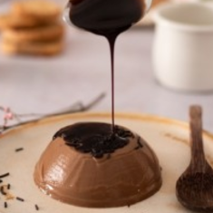
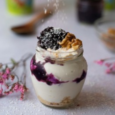
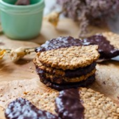
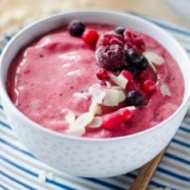
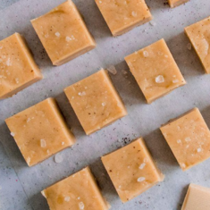
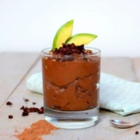
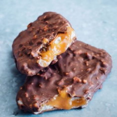
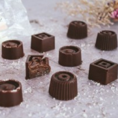

Recetario
Flan Choco-coco

Ingredientes
- 1 taza de leche de coco
- 1 cucharadita de agar agar en polvo
- 1/4 taza de sirope de ágave
- 3 cditas de vainilla
- sirope de chocolate al gusto
Tostadas francesas
Ingredientes
- 2 rebanadas de pan
- Leche vegetal
- 2 cdas de vainilla
- Chocolate fundido
- Nueces, fresas o cerezas
Yogurt con frutas

Ingredientes
- Yogurt de coco vegano
- 2 galletas tipo maria trituradas
- 1/4 taza de frutos rojos
- 1 cdita de coco rallado
- Nueces (opcional)
Choco-Cookies

Ingredientes
- 1 taza de avena
- 3 cdas soperas de aceite
- 4 cucharadas soperas de harina de trigo
- 1/2 cdita de levadura en polvo
- 1/2 tabla de chocolate negro
Helado casero

Ingredientes
- 1 taza de leche de coco
- 1/2 bol de Frutos rojos congelados
- 1 banana sin congelar
- 1 hojita de menta
- sirope de fruta (opcional)
Fudge de chocolate

Ingredientes
- 260 g de crema de anacardos
- 80 g de Chocolate blanco
- 80 g de sirope de arce
- 1/4 de una cucharadita de vainilla
- Una pizca de sal gruesa
Mousse Choco-Palta

Ingredientes
- 7 cucharadas de cacao en polvo
- 1/2 palta (aguacate)
- 1 banana congelada
- 3 cucharadas de jugo de limón
- 2 cucharadas de sirope de arce
tortitas de coco
Ingredientes
- Una cucharada grande de semillas de lino
- 4-6 cucharadas de agua
- 160 g de harina de trigo
- 200 ml de leche de coco 80%
- Una pizca de sal y polvo de hornear
Sniker vegan

Ingredientes
- 30 g de arroz inflado
- 2 latas de crema de coco
- 75 g de pasta de almendra blanca
- 1/4 de una cucharadita de vainilla
- Chocolate cobertura al gusto
Bombones de coco

Ingredientes
- 100 gramos de azúcar de coco
- 400 ml de leche de coco
- 200 gramos de chocolate negro para fundir
- 2 cucharadas de aceite de coco y vainilla
- 1 cucharadita de coco rallado